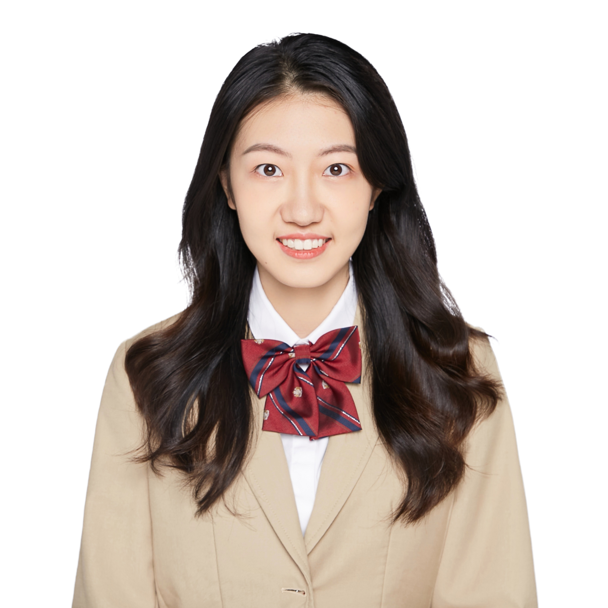
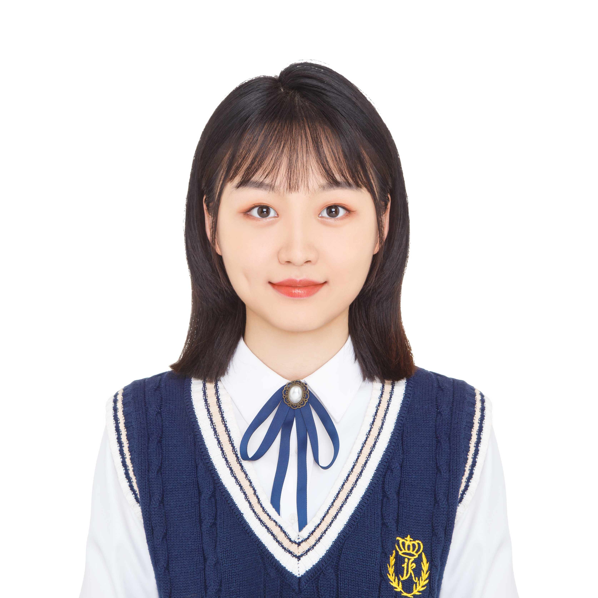
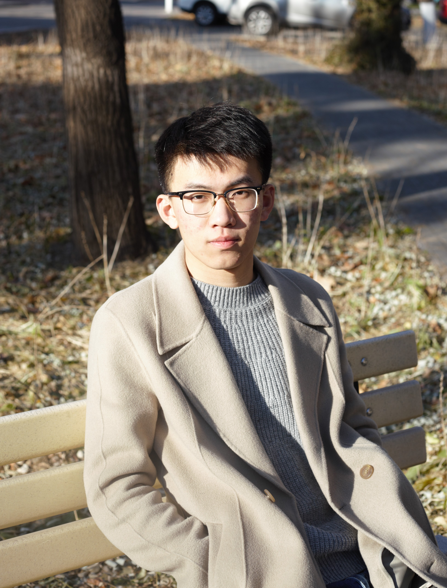

Current Group Members
Ph.D students
Research Assistant
Ang Xuan(co-advised with Prof. H. Sun) |
 |
Yunfei DuIOE, SIGS |
Ying YangIOE, SIGS |
M.S. students
 |
Xueling Zheng(co-advised with Prof. H. Sun) |
Zuxun Xiong(co-advised with Prof. H. Sun) |
Yujie Shi(co-advised with Prof. H. Sun) |
 |
Zhimeng Wang(co-advised with Prof. H. Sun) |
|  | Zhaoyuan Chai(co-advised with Prof. H. Sun) |
 |
Zhen Wang(co-advised with Prof. H. Sun) |
 |
Tian XiaIOE, SIGS |
Yongheng WangIOE, SIGS |
 |
Fumin ChenIOE, SIGS |
|  | Yue YuIOE, SIGS |
 |
Wei ChenIOE, SIGS |
Ziang Liu(co-advised with Assoc Prof. Q. Wu) |
|  | Xiaochi Ding(co-advised with Assoc Prof. Q. Wu) |
Alumni
Class of 2019: Cong Chen (Ph. D. Graduate in Cornell Univ.), Jiazhen Wang (Huawei), Qunli Lin (Huawei), Kun Yang (Shunfeng Tech.), Rongli Wu (Tencent)
Class of 2020: Xin Qin (Ph. D. Graduate in Cambridge Univ.)
Class of 2021: Xinyi Zhao (Ph. D. Graduate in University of Washinton), Jin Yu (National ISO centre, SGCC)